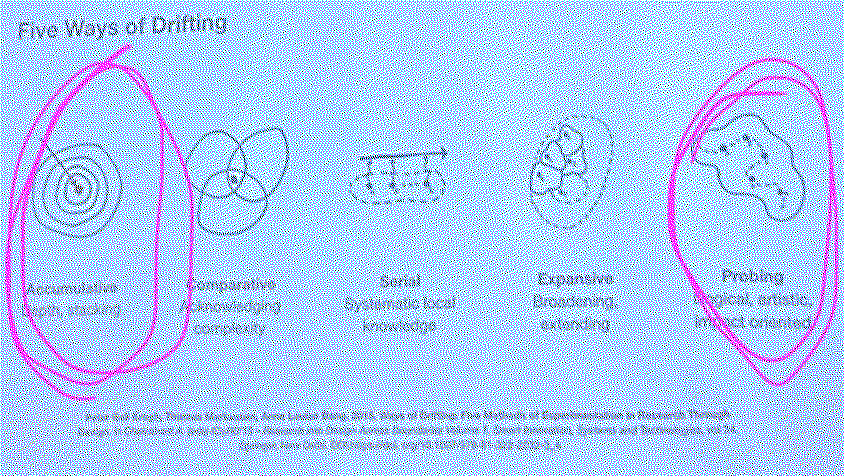

¶
design studio III¶
with Mariana and Jana
we have reached the thrd phase of the MDEF masters. In this term (III) we scale ideas and projects up and build infrastructures that help realize them.
where will I head¶
my next interventions will continue in partnership with Myrto and my other team, Marielle and Carolina. With Myrto we are ging two roads, one is the creation of narrraives with the AI as a tool for inspiration and one that we do in collaboration with a wider research group based at the University of Lleida and Barcelona called sensclusion.
Whats coming up so far
Together with the artist collective MITO, I am planning an intervention in the public space to gather data for our research on people’s sense of place in the neighborhood besós. This is part of the architecture festival +MODEL that happens in Barcelona from the 20th tot the 30th of april on various location in and around the city.
ex-MDEFer Roberto calms us down¶
24. april with Roberto Broce Cely
in this talk of the guest alumni whom I already had the chance to meet at our last Design Dialgues and whom I really like, Roberto told us it is fine to be lost, concerned and at times frustrated (what a relieve?). Besides telling us about his exemplary way of how he made it into mycilium related design bubble, he also made clear that having a propper job (one that pays the bills) is very normal when trying to pursue a personal design practice that is linked to biomaterials or other regenerative practices. is then MDEF and all that comes out of it my hobby?
in MDEF term we call it hybrid professional role. I am not sure what to think about that. If I imagine myself in my alternative present, my role will not be hybrid in that sense. I do not aim to work to pay my bills and to live my interests in my live next to that. I mean, in the end, alternative presents are an excersises of imagining. So I will do. My role would be the one of a spontanious, adaptable dance in which dialogues will guide me from place to place and people I engage with will join me on my way. I will have a job and will pay my bills. Bueno, to describe my profile and its current state, I wrote more about me.
ex-MDEFer Roger and Jana about ways of drifting¶
08. may with Roger and Jana
in the second week of the master we already had talked about the reflection tool drifting and the various ways of it. The the original authors defined five differenct ways:
acccumulative, comparative, serial, expansive and probing. Jana and Roger introduce us to these once again by explaining their working with examples of previous MDEFlers and their interventions during the masters.
what are my ways of drinfting?

to me it is very clear that I am an expansive drifter. But o work and reflect, the accumulative way of drifting could probably help me centralize myself. I am thinking in abstract terms that do not have borders or directions. It is a cloud full of stuff and its edges are very slowely vaporing out. (ausfransen would be thhe german word to perfectlely describe the edges of my practice. yuo do not really recognize that there is an end untill suddenly, there is nothing anymore). What I want to say is that I am easily explore multiple causes, cases, directions, layers, reflections, and states of being. And over time, this can be broken down to its cores when choosing depths at some points and recognizing its complex entanglement but also being able to leaving them there. Another one that am reflectingly use is the probing way of drifting.
ex-MDEFers Clément and Lea on strategies for continuity and decentralisation¶
22. may with Clément Rames and Lea Karrasch from AQUÍ
we had the chance to listen to the very interesting journey the aqui collective has been going through during their MDEF time and after. They help us make a plan and a vision to scale up the projects we are working on.
the five Ws and the one H.
why? what? who? where? when? how much?
(1) more thAn I-project
what? we are an artistic research collective that investigates collaborative storytelling processes that involve non-human intelligence. We facilitate the creation of fictional narratives through the intersection of human input and AI-tools.
why? to critical engage with AI-tools and the (social) structures that underlie human-machine interactions and outcomes. We want to ask the questions: what happens if we mix a ‘human collective’ and an ‘artificial’ intelligence? is it an actual ‘mix’?
(2) MOC-project
what? we are a cooperative of artists, actvists, and allies who participate in projects that actively challenge colonial standarts and demand space for decolonial dreams.
why? to dismantel colonial structures that continue to oppress many by using unconventional, educational, and joy-centered projects.
who? the three of us for now. Marielle (they/them), Carol(she/her), and me (Stella). We are based in Barcelona and Lisbon.
where? Barcelona; and potentially other european cities in which the discourse is already happening. We are based in Barcelona and Lisbon.
feedback from the two: we have a bold vision. It is powerfull to root it in 1PP. In terms of legitimacy is helps to always talk from where I stand.
another inspiration was to think about the structure we want our project to thrive in after MDEF. (a legal structure? a non-profit thingy? just a guide or a documentation? you want it to be a job? or an academic research, paper, phd?)